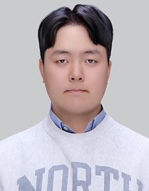
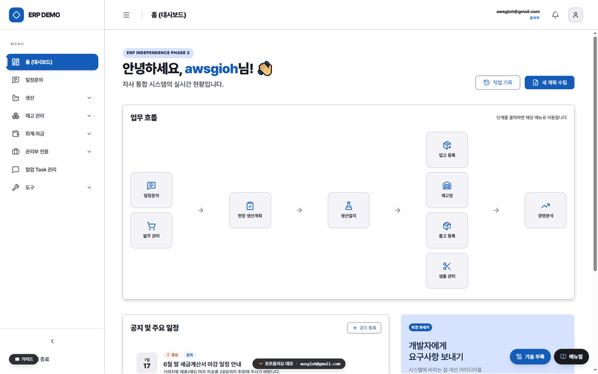
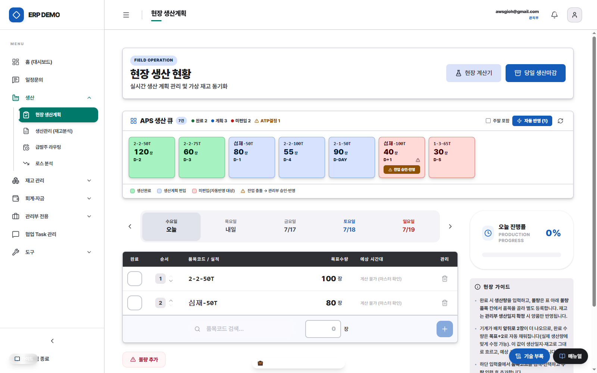
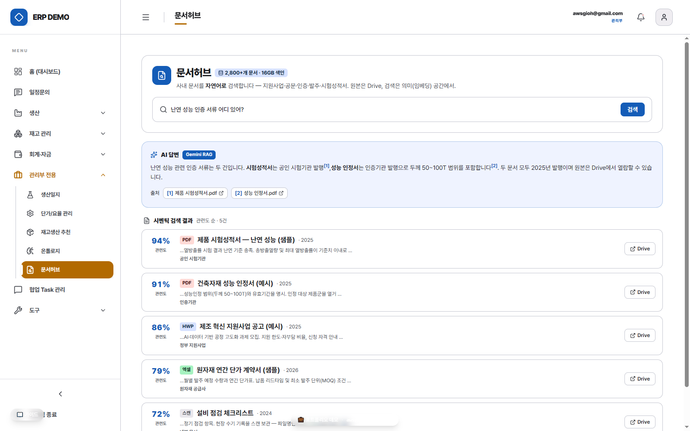

제조 중소기업 웹 ERP 1인 구축
자체 소프트웨어가 하나도 없던 18인 제조·화학 중소기업 — 입사 4주 차, 혼자 만든 첫 시스템이 실제 업무에 투입됐습니다. 서류와 디지털 곳곳에 흩어져 있던 데이터를 단일 정합 구조로 통합하고, 그 위에 AI 레이어를 얹은 기록입니다.


대표작 · 실운영factory제조 웹 ERP 1인 구축
14개 업무 도메인을 이벤트 소싱 백본 위에 통합 — 설계·구축·운영·인계까지 전 과정 단독 수행.

제조 도메인precision_manufacturing생산 관리 — 카톡 수주→APS→1클릭 지시
카톡 발주 문의를 3단 판정엔진으로 받아 APS가 잔량을 네팅·EDD 스케줄하고, 생산지시서는 1클릭 발행 — 기록은 BOM 분해·실측 로스로 검증합니다.

AI 레이어network_intelligence문서허브·온톨로지 — AI 레이어
서류·비정형 문서를 벡터로 임베딩해 RRF 시멘틱 검색과 RAG를 얹고, 도메인 용어는 온톨로지 개념그래프로 의미 검색합니다.
 OSS · 개인 R&D
OSS · 개인 R&DhubAI 엔지니어링 — OSS·개인 R&D
ERP 개발에 쓴 AI 에이전트 규율을 harness-scope로 공개(OSS), 같은 축을 LLM 게이트웨이·PKG 연구로 확장.
만든 사람 — 비효율을 진단해 도는 시스템으로 만드는 일을 좋아합니다. 6년간 1인 이커머스(주문~정산 자동화)를 운영했고, 제조 회사 관리직으로 입사해 이 시스템을 만들었습니다. 이력서에서 더 보기 →
In English: Solo design, build and operation of a cloud full-stack ERP (FastAPI · React · PostgreSQL · Cloud Run) for an 18-person manufacturing/chemical SME in Korea — first production use four weeks in. Unified scattered paper and digital records into a single event-sourced backbone with domain-ontology validation, added a semantic document hub over unstructured files, and open-sourced the AI-agent workflow tooling as harness-scope.
이력서 · 화면 둘러보기 · GitHub repo · agent-memory-llmops · awsgioh@gmail.com